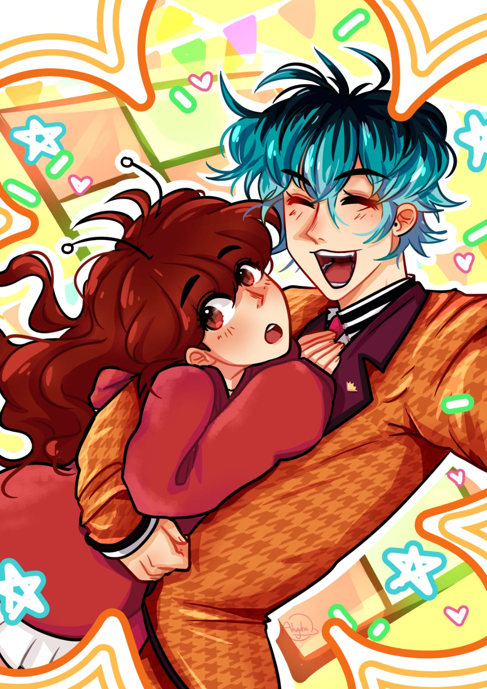
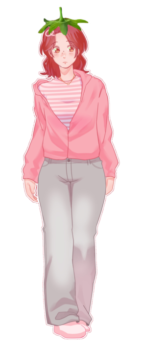

Florencia Castagnani
19 años ☆ 16/10 ☆ INFP ☆ Hufflepuff
Estudiante de Multimedia ☆ 2° año ☆ UNLP

──★ ˙🍓 ̟!! Holo (˶ᵔ ᵕ ᵔ˶) ‹𝟹
Soy Florencia, aunque por lo general me llaman Miru !!
Soy una persona bastante intensa y cariñosa
Mis colores favoritos son el Rosa y el Verde !!
Suelo pasar mi tiempo dibujando y pintando
Tengo 4 gatos, 3 gallinas, 2 perras y un pez :3